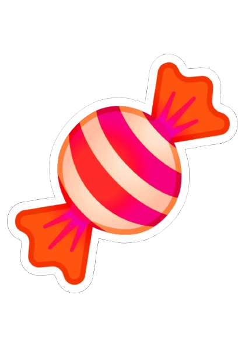
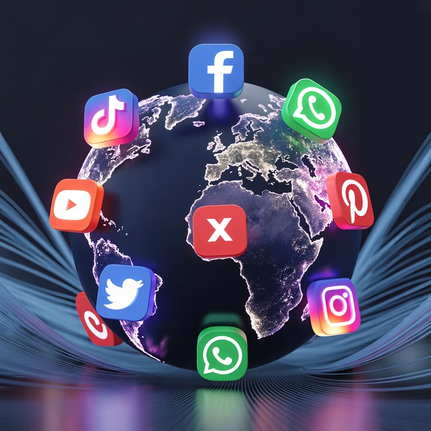
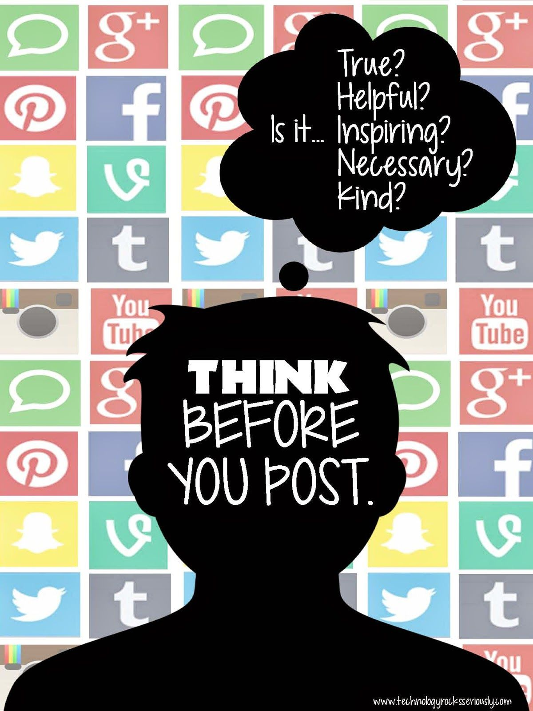

Media sosial adalah platform berbasis digital yang memudahkan penggunanya untuk saling berinteraksi, membuat, serta membagikan konten secara online. Secara teknis, media sosial mengandalkan infrastruktur internet dan perangkat mobile atau desktop. Di dalamnya, pengguna dapat membangun profil pribadi, terhubung dengan orang lain, dan berpartisipasi dalam berbagai bentuk komunikasi digital.

Jejak digital adalah rekaman atau jejak informasi yang kita tinggalkan saat menggunakan teknologi digital, seperti internet dan perangkat digital lainnya. Setiap kali kita mengakses situs web, menggunakan media sosial, mengirim email, atau melakukan transaksi online, kita meninggalkan jejak digital. Jejak digital adalah sesuatu yang bisa berupa data pribadi, riwayat pencarian, interaksi di media sosial, lokasi geografis, dan lain-lain.
Sebelum mengunggah, berkomentar, atau membagikan sesuatu di media sosial, kita perlu memikirkan dampaknya bagi diri sendiri dan orang lain. Pastikan informasi yang dibagikan benar dan tidak mengandung kata-kata yang dapat menyakiti atau merugikan orang lain. Ingat bahwa apa yang kita unggah di internet dapat tersebar luas dan sulit untuk dihapus sepenuhnya. Dengan berpikir sebelum bertindak, kita dapat menggunakan media sosial dengan lebih bijak, aman, dan bertanggung jawab.

Sebelum membagikan informasi di media sosial, kita harus memastikan bahwa informasi tersebut benar dan berasal dari sumber yang terpercaya. Kita tidak disarankan untuk langsung percaya atau menyebarkan berita yang belum terbukti kebenarannya karena, dapat menyebabkan hoaks dan kesalahpahaman. Kita juga perlu mempertimbangkan apakah informasi tersebut bermanfaat dan tidak merugikan orang lain. Dengan saring sebelum sharing, kita dapat menjadi pengguna media sosial yang lebih bijak dan bertanggung jawab.
Saat berkomunikasi dan berinteraksi di media sosial, kita harus gunakan bahasa yang sopan dan hargai pendapat orang lain. Hindari kata-kata kasar, hinaan, atau komentar yang dapat menyakiti perasaan orang lain. Sebelum mengirim pesan atau komentar, kita sebaiknya pikirkan apakah perkataan kita dapat menimbulkan kesalahpahaman. Media sosial dapat digunakan juga untuk membagikan informasi, pengetahuan, dan hal-hal yang bermanfaat bagi orang lain. Kita juga dapat menggunakannya untuk mengembangkan kreativitas, belajar hal baru, dan melakukan kegiatan positif. Tetapi di zaman modern ini, media sosial sering dipersalahgunakan untuk menyebarkan kebencian, hoaks, atau konten yang merugikan. Dengan menerapkan etika dalam berkomunikasi, media sosial dapat menjadi tempat yang nyaman dan positif bagi semua orang.